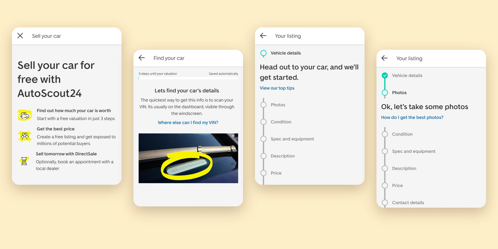
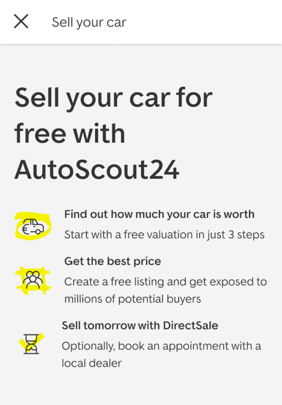
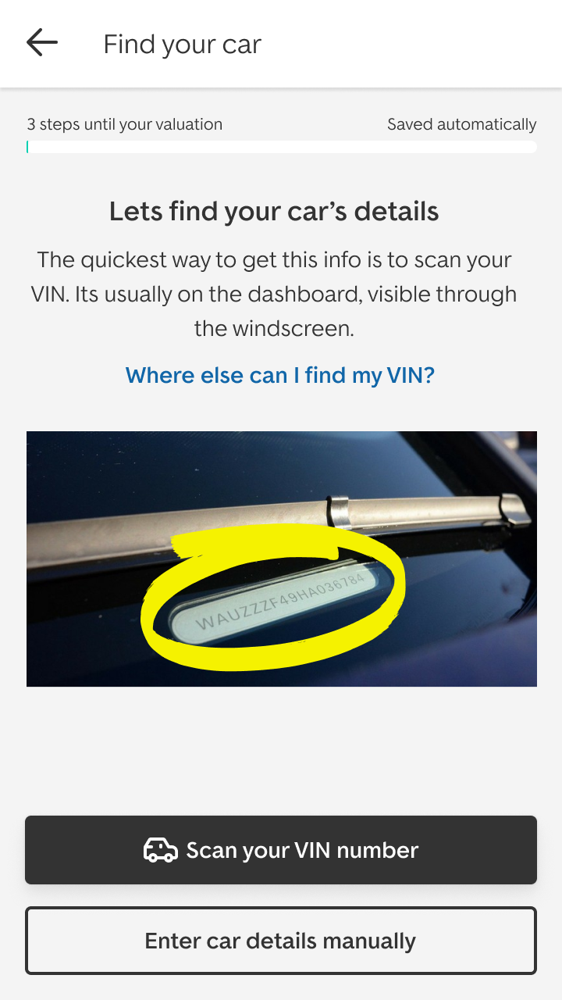
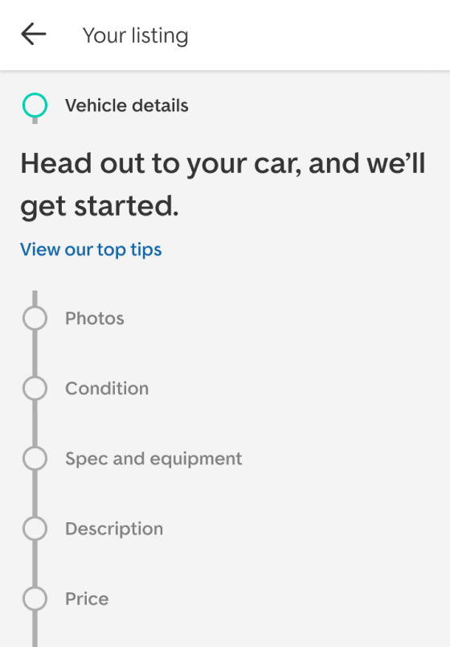
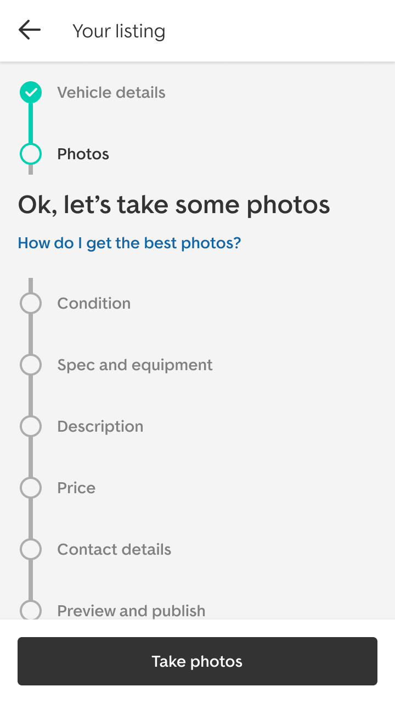
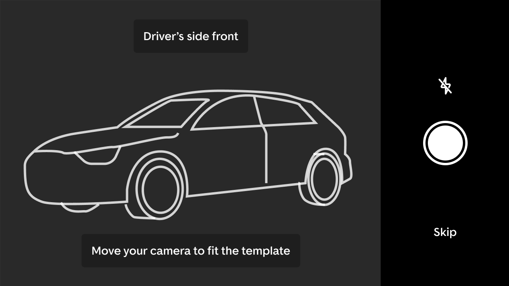

Selling Your Own Car
Bringing every way to sell a car into one flow, and a vision that shaped the roadmaps after it.

Most buyers have a car to sell
80% of people buying a car on AutoScout24 also have one to sell, yet fewer than 20% of them were using our selling options. For a marketplace, every one of those cars is supply going somewhere else.
I was tasked with unifying our selling flows, and with creating an inspiring visual direction for where they could go next: one that would shape roadmaps and give the rest of the UX team a reference to design towards.
Choosing before you know
Sellers had to decide up front how they wanted to sell: list their car privately, sell it to a dealer, or just find out what it was worth. Each choice led into its own separate flow.
But most people can’t pick the right route until they know what their car is worth and how much effort each option takes. We were asking the hardest question first, before giving them anything back.
One flow, built around the seller
To understand sellers’ context, I tested multiple concepts with them before settling on a direction.
The vision brings every route into one flow that starts with what sellers want first: a free valuation in three steps. From there, they choose how to sell, with a free listing to get the best price, or DirectSale to sell to a local dealer as soon as tomorrow.
Creating a listing is designed for where it actually happens: at the car, on a phone. Scanning the VIN fills in the car’s details, clear steps run from photos to contact details, and a camera template guides each photo, angle by angle.





A direction the team built towards
The vision did the job it was made for. It unlocked roadmaps for selling, and became a design reference the wider UX team drew on in their own work.
Features from it have since rolled out successfully in the product.